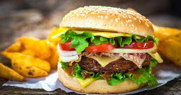

Hamburgaren – alltid trendig
Idag är hamburgare inte längre bara en bulle med kött, utan det finns ett stort utbud av hamburgare och nya varianter kommer hela tiden. LUSINI visar dig här var burgaren kommer ifrån, vad hypen handlar om och hur mångsidig den populära klassikern är.
varifrån kommer hamburgaren?
Det tvistas om vad som är burgarens ursprung. En av historierna som berättas är att den första burgaren serverades på Louis’ Lunch i New Haven, Connecticut, 1895. Det var den tyske immigranten Louis Lassen som lade stekt köttfärs mellan två skivor bröd och kallade det Steak Sandwich. Men flera andra hävdar att det var de som serverade den första hamburgaren, däribland Charlie Nagreen 1885 i Seymour, Wisconsin och Bilby 1891 i Tulsa, Oklahoma. Oavsett vem som serverade den allra första hamburgaren är en sak säker: hypen startade i USA. Den 15 april 1955 öppnade den första McDonald’s-restaurangen i Des Plaines, Illinois, och därmed gick startskottet för en burgar-boom och grunden till den kommersiella snabbmaten var lagd.
visste du att…?
Namnet hamburgare kommer troligtvis från Hamburg Steak som i sin tur har tagit sitt namn efter den tyska staden Hamburg. I Hamburg Steak serverades köttfärsen i varma frallor och var en vanlig rätt på skeppen som fraktade tyska emigranter till USA.
Vad består en klassisk hamburgare av?
En klassisk burgare består endast av ett fåtal ingredienser. Den serveras vanligtvis med pommes frites och om du vill äta den på riktigt amerikanskt vis så kan den också ackompanjeras av en milkshake.
- Bröd:
- Hamburgarebrödet kallas ofta för bun och den klassiska varianten består av vatten, mjölk, jäst, vetemjöl, socker, ägg, smör, salt och toppas med sesamfrö.
- Kött:
- Själva burgaren består av malet nötkött som formats till runda biffar. Köttet steks eller grillas och kryddas endast med salt och peppar.
- Tillbehör:
- Vanliga tillbehör på en klassisk burgare är sallad, tomat, lök och inlagd gurka.
- Sås:
- För den klassiska varianten är det hamburgaredressing och eventuellt ketchup som gäller.
Vårt tips
Den klassiska hamburgaren kan man enkelt variera med ost, bacon, grillade grönsaker, avokado, chilis eller picklad rödlök. I stället för vanliga pommes kan man servera sötpotatispommes till. För vegetarianer och veganer byter man helt enkelt ut köttet mot en köttfri burgare, gjord på exempelvis kikärtor eller bönor.
burgarna rätt
Hamburgare handlar inte bara om ingredienserna, utan också om utseendet. Om du ska kunna konkurrera med alla som serverar hamburgare måste också presentationen vara inbjudande. Mötet mellan gourmet och street food ligger i tiden. Servera till exempel burgaren på ett skifferfat och pommes i en bägare eller i pommespapper. Ett annat tips är att sticka en rustik köttkniv genom burgaren för att hålla samman alla delar, och servera kreationen på en serveringsbräda.- Fransk burgare:
- Briochebröd och nötköttsburgare toppad med blåmögelost, karamelliserad lök och bladspenat. Extra tips: lägg på marinerade päronskivor.
- Asiatisk burgare:
- Byt ut köttet mot grillade scampi och toppa med mangochutney, chili och avokado.
- Norsk burgare:
- Med lax, dillsås och gräddfil.
- Spansk burgare:
- Burgare av ibericogris, toppad med chorizo, manchegoost och aioli.